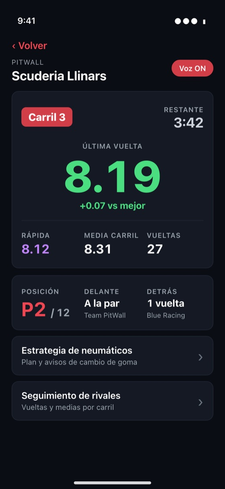
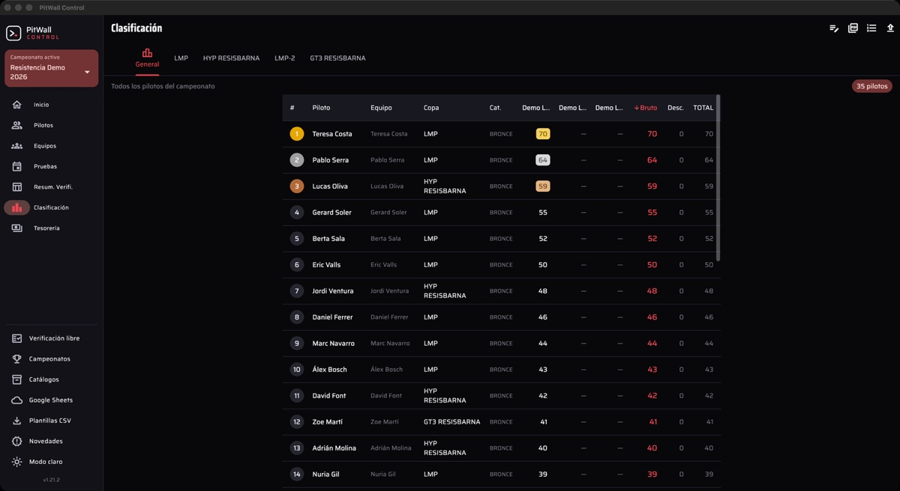

Software for your
slot races.
PitWall is three programs that work together. Each one does one job. Pick the one you need:

Manager
Times the race. Counts every car’s laps and shows the standings in big numbers for the whole room to see.

Lap
Reads your times out loud while you race. Afterwards, you can go over the race on your phone.

Control
Runs the season: drivers, teams, points for every round, calendar and fees.
Where do I start?
If you run races at your club, start with Manager: it’s the one that does the timing. Lap and Control work alongside it.
How it all fits together
The track computer, running Manager, receives the laps from the timing system and passes them on to the drivers’ phones and to Control. Everything stays inside the club, over WiFi: no internet needed.
The DS-300, the BART and the TicTac interface are the timing systems: the boxes that detect each car as it crosses the line. The phone never connects to the track; it only listens to Manager. With Control, data goes both ways: Control sends the heats to Manager and, at the end, Manager sends the results back to score the championship.
Help
Manuals
Explained step by step, with pictures.
- Learn Manager with videosVideos under a minute long. Start here.
- Manager manual
- Lap manual
- Control manual
Stuck? Write to us.
If something isn’t working or you don’t know what to do next, send us an email and we’ll help you out.
Send an email info.pitwall@gmail.comFind slot races
Calendar of slot races in Europe, with filters by country and type of race.
Free software
PitWall is free software. Your club can use it without paying for licences, and the code of every program is published so anyone can check it or improve it.
- You can use it, study it and change it freely.
- If you share it or change it, it has to stay free, with its code available to everyone.
- It comes with no warranty. The “PitWall” name and logo are not covered by the licence.
© 2026 Víctor González Gómez. The full licences are in each repository.